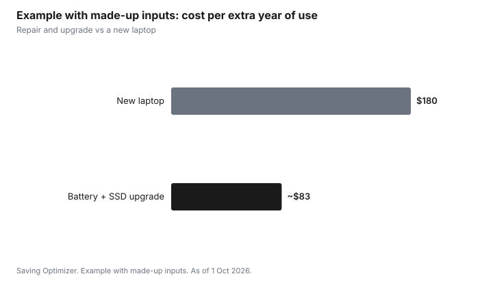

Technology · Canada
Repair or Replace a Laptop: Batteries, Storage Upgrades and the Break-Even Point
In Canada, many slow or tired laptops can be fixed for much less than a new one: a new battery, a switch from a hard drive to an SSD, more RAM where it is not soldered, or a fan cleaning. Repair makes sense when the fix costs well under a comparable replacement and the laptop still gets software and security updates. A common rule of thumb is to rethink a repair costing more than about half the price of a comparable replacement. Check your warranty first, and back up before any repair.
Key takeaways
- Battery: if it no longer holds a charge, a replacement is often the cheapest fix.
- Slow: an SSD (if you still have a hard drive) and more RAM (if not soldered) can help a lot.
- Check software support: an unsupported laptop is a security risk.
- Rule of thumb: rethink repairs over about half the cost of a comparable replacement.
- Example with made-up inputs: $250 repair vs $900 new laptop.
Common fixes
| Problem | Possible fix | Check first |
|---|---|---|
| Battery drains fast | Replace the battery | Battery health report; whether it is glued in |
| Slow startup and apps | Hard drive to SSD; add RAM | Whether RAM is soldered; drive type |
| Overheating or noise | Clean fans and replace thermal paste | Dust; fan errors |
| Cracked screen | Replace the panel | Cost compared with the laptop's value |
| Keyboard fault | Replace keyboard or use external | Whether it is part of the top case |
The break-even point
Compare the repair cost with the price of a comparable new or refurbished laptop. Also count how many years of updates the current laptop has left and how many years a repair adds. A repair that adds two or three years of use for a fraction of the replacement cost usually wins. Several problems at once, or an unsupported operating system, tip the balance toward replacing.
Before you pay for a repair
- Check the manufacturer's warranty and any extended plan or credit card warranty extension.
- Provincial consumer laws can apply to products that fail early. Quebec's planned obsolescence law adds repairability rules.
- Get a written quote and ask about warranty on the repair.
- Back up your files before handing it over.
- If replacing, sell or recycle the old laptop after wiping it.
Step by step: diagnose before you decide
- Back up your files to an external drive or cloud storage before anything else.
- Check battery health. On Windows, running powercfg /batteryreport in a command prompt creates a report comparing design capacity with current full-charge capacity. On a Mac, see System Settings, then Battery, for battery condition or health.
- Check the storage type and free space. Windows Task Manager (Performance tab) and macOS's About This Mac show whether you have an SSD or a hard drive.
- Check memory use while doing your normal tasks. If memory is constantly near full, more RAM may help, if it is not soldered.
- Check whether the laptop still gets operating system and security updates.
- Look up the model's specifications or service manual to see which parts can be replaced.
- Get a written quote for the repair and compare it with a comparable replacement.
Which upgrades give the most
| Upgrade | Helps when | Limits |
|---|---|---|
| Hard drive to SSD | The laptop still uses a spinning hard drive | Needs cloning or a fresh install |
| Larger SSD | Storage is constantly full | Some laptops have soldered storage |
| More RAM | Memory is maxed out in normal use | Many thin laptops have soldered RAM |
| New battery | Battery health is low or it will not hold a charge | Glued batteries cost more to replace |
| Fresh operating system install | Software clutter slows the laptop | Back up first; reinstall apps |
Warranty and legal rights to check
Check the manufacturer's warranty and any extended plan before paying for a repair. Some credit cards extend the manufacturer's warranty on purchases made with the card; read your card's benefits guide. Provincial consumer laws can provide rights when a product fails sooner than expected. In Quebec, a legal warranty of good working order under the planned obsolescence law applies to new laptops bought from 5 October 2026, for three years, covering parts and labour; it does not cover damage from abuse. Repair information and parts availability rules already apply in Quebec since 5 October 2025.
Recycling the old laptop
If you replace it, wipe the drive first: use the built-in reset option on Windows or erase the Mac in its settings. Then sell, donate or recycle it. Provincial electronics recycling programs accept laptops at drop-off locations in many provinces; Recycle My Electronics lists them.
Common mistakes
- Paying for a repair without checking warranty or credit card coverage.
- Buying RAM for a laptop where it is soldered.
- Repairing a laptop that no longer gets security updates.
- Skipping the backup before handing it to a shop.
- Comparing a repair with a much better new laptop rather than a comparable one.
Example with made-up inputs: repair vs replace
These numbers are an example with made-up inputs, not current prices.
| Option | Cost | Extra years of use |
|---|---|---|
| Battery + SSD upgrade | $250 | 3 |
| Comparable new laptop | $900 | 5 |
Cost per extra year: $250 ÷ 3 ≈ $83 for the repair, $900 ÷ 5 = $180 for the new laptop, with made-up inputs.

Sources
- Quebec Office de la protection du consommateur, planned obsolescence and repairability rules, as of 1 Oct 2026.
- The half-of-replacement figure is a common rule of thumb, not a regulation.
- Office de la protection du consommateur and Government of Quebec, warranty of good working order: three years for laptops, desktops, tablets, phones and game consoles bought new from 5 Oct 2026, as of 1 Oct 2026.
- Recycle My Electronics, provincial electronics recycling programs, as of 1 Oct 2026.
- The prices and years in the example table and chart are made-up inputs.
Frequently asked questions
Is it worth replacing a laptop battery?
Often, if the rest of the laptop works well and still gets updates. A battery is usually far cheaper than a new laptop.
Will an SSD speed up an old laptop?
If it still has a hard drive, switching to an SSD usually makes it much faster to start and open apps.
When should I replace instead of repair?
When the repair costs more than about half of a comparable replacement, several parts are failing, or the laptop no longer gets security updates.
Can I add RAM to my laptop?
Only if it is not soldered to the motherboard. Check the model's specifications.
Does warranty cover a laptop repair?
Check the manufacturer's warranty, any extended plan, and credit card warranty extensions. Provincial consumer laws may also apply.
How do I check my laptop's battery health?
On Windows, run powercfg /batteryreport in a command prompt to get a report comparing design and current capacity. On a Mac, see System Settings, then Battery.
Does Quebec's new warranty cover laptops?
Yes. Quebec's warranty of good working order covers new laptops bought from 5 October 2026 for three years, including parts and labour, but not damage from abuse.
Researched and drafted with AI assistance and fact-checked against official Canadian sources. How we create content.
Disclosure: Repair shops and laptops are described as offer types; none is named or ranked. Saving Optimizer may earn a commission if a partner link is added later; no partnership is claimed. Education only.